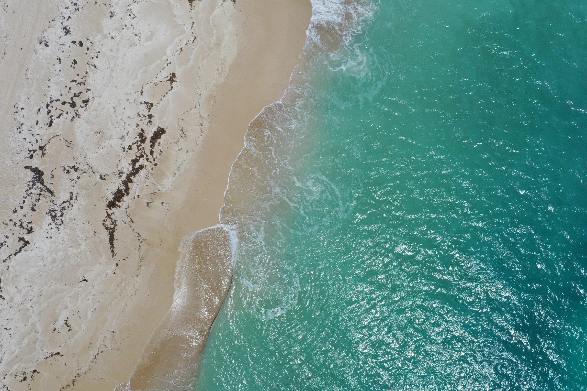

Geospatial Analysis | Cartography & Data Visualization | Environmental Science

I'm a GIS enthusiast working at the intersection of geospatial technology and environmental science, with eight years of experience across a wide variety of disciplines. I have a broad technical skillset in spatial analysis, data visualization, and web application development. I enjoy working on teams and using creative critical thinking to solve complex problems, and I'm passionate about helping people understand and communicate their data - from government agencies, to research teams, to individuals. The portfolio displayed here highlights some of the projects and roles that I've worked on throughout my career. I'd love to connect if you have similar interests or would like to talk more!